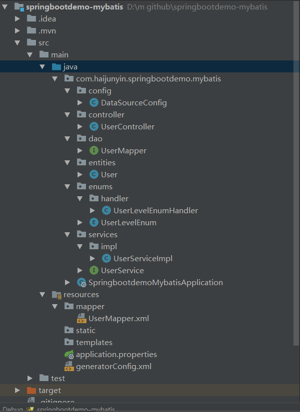
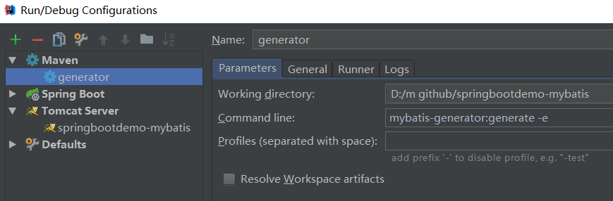

2、SpringbootMybatis整合
本篇文章用一个简单的demo介绍了mybatis在springboot中如何配置使用，包括自动生成实体类和mapper文件，还有枚举类的处理，在创建demo之前需要在mysql中创建一个user表做演示用
CREATE TABLE `user` (
`id` bigint(20) NOT NULL AUTO_INCREMENT COMMENT '主键',
`name` varchar(20) DEFAULT NULL COMMENT '姓名',
`age` int(3) DEFAULT NULL COMMENT '年龄',
`user_level` int(2) DEFAULT NULL COMMENT '用户级别',
`social_price_amount` decimal(16,4) DEFAULT NULL COMMENT '身价',
`created_time` datetime DEFAULT NULL COMMENT '创建时间',
`update_time` datetime DEFAULT NULL COMMENT '修改时间',
PRIMARY KEY (`id`)
) ENGINE=InnoDB AUTO_INCREMENT=2 DEFAULT CHARSET=utf8 COMMENT='用户表';
构建过程
项目结构如图

pom.xml引入相关包
<?xml version="1.0" encoding="UTF-8"?>
<project xmlns="http://maven.apache.org/POM/4.0.0" xmlns:xsi="http://www.w3.org/2001/XMLSchema-instance"
xsi:schemaLocation="http://maven.apache.org/POM/4.0.0 http://maven.apache.org/xsd/maven-4.0.0.xsd">
<modelVersion>4.0.0</modelVersion>
<parent>
<groupId>org.springframework.boot</groupId>
<artifactId>spring-boot-starter-parent</artifactId>
<version>2.1.2.RELEASE</version>
<relativePath/> <!-- lookup parent from repository -->
</parent>
<groupId>com.haijunyin</groupId>
<artifactId>springbootdemo-mybatis</artifactId>
<version>0.0.1-SNAPSHOT</version>
<name>springbootdemo-mybatis</name>
<description>Demo project for Spring Boot</description>
<packaging>war</packaging>
<properties>
<java.version>1.8</java.version>
</properties>
<dependencies>
<dependency>
<groupId>org.springframework.boot</groupId>
<artifactId>spring-boot-starter-web</artifactId>
<!-- 排除内置容器，排除内置容器导出成war包可以让外部容器运行spring-boot项目-->
<exclusions>
<exclusion>
<groupId>org.springframework.boot</groupId>
<artifactId>spring-boot-starter-tomcat</artifactId>
</exclusion>
</exclusions>
</dependency>
<dependency>
<groupId>javax.servlet</groupId>
<artifactId>javax.servlet-api</artifactId>
<version>4.0.0</version>
<scope>provided</scope>
</dependency>
<dependency>
<groupId>org.springframework.boot</groupId>
<artifactId>spring-boot-starter-test</artifactId>
<scope>test</scope>
</dependency>
<!-- dal -->
<dependency>
<groupId>mysql</groupId>
<artifactId>mysql-connector-java</artifactId>
<scope>runtime</scope>
</dependency>
<dependency>
<groupId>com.alibaba</groupId>
<artifactId>druid</artifactId>
<version>1.1.0</version>
</dependency>
<dependency>
<groupId>org.springframework.boot</groupId>
<artifactId>spring-boot-starter-data-jpa</artifactId>
</dependency>
<dependency>
<groupId>org.mybatis.spring.boot</groupId>
<artifactId>mybatis-spring-boot-starter</artifactId>
<version>1.3.2</version>
</dependency>
</dependencies>
<build>
<plugins>
<!-- mybatis自动生成代码插件 -->
<plugin>
<groupId>org.mybatis.generator</groupId>
<artifactId>mybatis-generator-maven-plugin</artifactId>
<version>1.3.2</version>
<configuration>
<verbose>true</verbose>
<overwrite>true</overwrite>
</configuration>
</plugin>
<plugin>
<groupId>org.springframework.boot</groupId>
<artifactId>spring-boot-maven-plugin</artifactId>
</plugin>
</plugins>
</build>
</project>SpringbootdemoMybatisApplication.java
package com.haijunyin.springbootdemo.mybatis;
import org.springframework.boot.autoconfigure.SpringBootApplication;
import org.springframework.boot.autoconfigure.jdbc.DataSourceAutoConfiguration;
import org.springframework.boot.builder.SpringApplicationBuilder;
import org.springframework.boot.web.servlet.support.SpringBootServletInitializer;
import org.springframework.context.annotation.ComponentScan;
import org.springframework.scheduling.annotation.EnableAsync;
/**
* 继承SpringBootServletInitializer，因为继承SpringBootServletInitializer是继承WebApplicationInitializer的，而servlet容器启动的时候
* 会将WebApplicationInitializer相关的所有子类实例化(这也是servlet3.0以上的版本提供支持)，所以我们还需要在pom.xml
* 文件中导入servlet3.0及以上的版本
*/
@ComponentScan(basePackages = "com.haijunyin.springbootdemo.mybatis")
@SpringBootApplication(exclude = {DataSourceAutoConfiguration.class})
@EnableAsync
public class SpringbootdemoMybatisApplication extends SpringBootServletInitializer {
@Override
protected SpringApplicationBuilder configure(SpringApplicationBuilder applicationBuilder) {
return applicationBuilder.sources(SpringbootdemoMybatisApplication.class);
}
// public static void main(String[] args) {
// SpringApplication.run(SpringbootdemoMybatisApplication.class, args);
// }
}
generatorConfig.xml自动生成代码插件配置
<?xml version="1.0" encoding="UTF-8"?>
<!DOCTYPE generatorConfiguration
PUBLIC "-//mybatis.org//DTD MyBatis Generator Configuration 1.0//EN"
"http://mybatis.org/dtd/mybatis-generator-config_1_0.dtd">
<!-- 参考网站http://www.mybatis.org/generator/configreference/columnOverride.html -->
<generatorConfiguration>
<!-- 指定配置文件位置 -->
<properties resource="application.properties" />
<!-- 数据库驱动包 -->
<classPathEntry location="${classPath}" />
<context id="mysql" targetRuntime="MyBatis3">
<!-- 生成的Java文件的编码 -->
<property name="javaFileEncoding" value="UTF-8" />
<commentGenerator>
<property name="suppressAllComments" value="true" />
<property name="suppressDate" value="true" />
</commentGenerator>
<!-- 数据库链接信息 -->
<jdbcConnection driverClass="${master.datasource.driverClassName}"
connectionURL="${master.datasource.url}" userId="${master.datasource.username}" password="${master.datasource.password}">
<property name="remarkable" value="true"></property>
</jdbcConnection>
<javaTypeResolver>
<property name="forceBigDecimals" value="false" />
</javaTypeResolver>
<!-- generate Model -->
<javaModelGenerator targetPackage="${modelPackage}" targetProject="${targetProject}">
<!-- for MyBatis3/MyBatis3Simple
自动为每一个生成的类创建一个构造方法，构造方法包含了所有的field；而不是使用setter；
-->
<property name="constructorBased" value="false"/>
<!-- 在targetPackage的基础上，根据数据库的schema再生成一层package，最终生成的类放在这个package下，默认为false -->
<property name="enableSubPackages" value="true"/>
<!-- 设置一个根对象，
如果设置了这个根对象，那么生成的keyClass或者recordClass会继承这个类；在Table的rootClass属性中可以覆盖该选项
注意：如果在key class或者record class中有root class相同的属性，MBG就不会重新生成这些属性了，包括：
1，属性名相同，类型相同，有相同的getter/setter方法；
-->
<!--<property name="rootClass" value="com._520it.mybatis.domain.BaseDomain"/>-->
<!-- 设置是否在getter方法中，对String类型字段调用trim()方法 -->
<property name="trimStrings" value="true"/>
</javaModelGenerator>
<!-- generate xml -->
<sqlMapGenerator targetPackage="${sqlMapperPackage}" targetProject=".\">
<property name="enableSubPackages" value="true" />
</sqlMapGenerator>
<!-- generate Mapper -->
<javaClientGenerator type="XMLMAPPER" targetPackage="${daoMapperPackage}" targetProject="${targetProject}">
<property name="enableSubPackages" value="true" />
</javaClientGenerator>
<table schema="" tableName="user"
domainObjectName="User" enableCountByExample="false"
enableUpdateByExample="false" enableDeleteByExample="false"
enableSelectByExample="false" selectByExampleQueryId="false"
enableDeleteByPrimaryKey="false" enableUpdateByPrimaryKey="false">
<columnOverride column="user_level"
javaType="com.haijunyin.springbootdemo.mybatis.enums.UserLevelEnum"
jdbcType="INTEGER"
typeHandler="com.haijunyin.springbootdemo.mybatis.enums.handler.UserLevelEnumHandler">
<property name="property" value="userLevel"/>
</columnOverride>
</table>
</context>
</generatorConfiguration>application.properties
master.datasource.driverClassName=com.mysql.jdbc.Driver
master.datasource.password=123456
master.datasource.url=jdbc:mysql://localhost:3306/bride?serverTimezone=UTC
master.datasource.username=root
classPath=D:/resp/mysql/mysql-connector-java/5.1.46/mysql-connector-java-5.1.46.jar
modelPackage=com.haijunyin.springbootdemo.mybatis.entities
sqlMapperPackage=src/main/resources/mapper
daoMapperPackage=com.haijunyin.springbootdemo.mybatis.dao
targetProject=src/main/javaDataSourceConfig.java用于配置mybatis的数据源
package com.haijunyin.springbootdemo.mybatis.config;
import com.alibaba.druid.pool.DruidDataSource;
import org.apache.ibatis.session.SqlSessionFactory;
import org.mybatis.spring.SqlSessionFactoryBean;
import org.mybatis.spring.annotation.MapperScan;
import org.springframework.beans.factory.annotation.Qualifier;
import org.springframework.beans.factory.annotation.Value;
import org.springframework.context.annotation.Bean;
import org.springframework.context.annotation.Configuration;
import org.springframework.context.annotation.Primary;
import org.springframework.core.io.support.PathMatchingResourcePatternResolver;
import javax.sql.DataSource;
/**
* MyBatis注解方式配置，代替mybatis.xml
* @Configuration 定义此类为Spring配置类
* @MapperScan 是mybatis中用于加载数据层接口的定义，basePackage表示Dao接口位置,sqlSessionFatoryRef表示sql会话
*/
@Configuration
@MapperScan(basePackages = "com.haijunyin.springbootdemo.mybatis",sqlSessionFactoryRef = "masterSqlSessionFactory")
public class DataSourceConfig {
@Value("${master.datasource.url}")
private String url;
@Value("${master.datasource.username}")
private String user;
@Value("${master.datasource.password}")
private String password;
@Value("${master.datasource.driverClassName}")
private String driverClass;
// @Value("${spring.datasource.initialSize}")
// private int initialSize;
// @Value("${spring.datasource.minIdle}")
// private int minIdle;
// @Value("${spring.datasource.maxActive}")
// private int maxActive;
// @Value("${spring.datasource.maxWait}")
// private int maxWait;
// @Value("${spring.datasource.validationQuery}")
// private String validationQuery;
// @Value("${spring.datasource.testOnBorrow}")
// private boolean testOnBorrow;
// @Value("${spring.datasource.testOnReturn}")
// private boolean testOnReturn;
// @Value("${spring.datasource.testWhileIdle}")
// private boolean testWhileIdle;
// @Value("${spring.datasource.timeBetweenEvictionRunsMillis}")
// private int timeBetweenEvictionRunsMillis;
// @Value("${spring.datasource.minEvictableIdleTimeMillis}")
// private int minEvictableIdleTimeMillis;
// @Value("${spring.datasource.removeAbandoned}")
// private boolean removeAbandoned;
// @Value("${spring.datasource.removeAbandonedTimeout}")
// private int removeAbandonedTimeout;
// @Value("${spring.datasource.logAbandoned}")
// private boolean logAbandoned;
// @Value("${spring.datasource.filters}")
// private String filters;
// @Value("${spring.datasource.poolPreparedStatements}")
// private boolean poolPreparedStatements;
// @Value("${spring.datasource.maxPoolPreparedStatementPerConnectionSize}")
// private int maxPoolPreparedStatementPerConnectionSize;
/**
* 数据源
* 用alibaba的DruidDataSource,需要在pom.xml导入连接池包com.alibaba.druid
* @return
*/
@Bean(name="masterDataSource")
@Primary
public DataSource masterDataSource(){
DruidDataSource dataSource = new DruidDataSource();
dataSource.setDriverClassName(driverClass);
dataSource.setUrl(url);
dataSource.setUsername(user);
dataSource.setPassword(password);
//其它配置
// dataSource.setInitialSize(initialSize);
// dataSource.setMinIdle(minIdle);
// dataSource.setMaxActive(maxActive);
// dataSource.setMaxWait(maxWait);
// dataSource.setTimeBetweenEvictionRunsMillis(timeBetweenEvictionRunsMillis);
// dataSource.setMinEvictableIdleTimeMillis(minEvictableIdleTimeMillis);
// dataSource.setValidationQuery(validationQuery);
// dataSource.setTestWhileIdle(testWhileIdle);
// dataSource.setTestOnBorrow(testOnBorrow);
// dataSource.setTestOnReturn(testOnReturn);
// dataSource.setPoolPreparedStatements(poolPreparedStatements);
// dataSource.setMaxPoolPreparedStatementPerConnectionSize(maxPoolPreparedStatementPerConnectionSize);
return dataSource;
}
/**
* session工厂
* @param masterDataSource
* @return
* @throws Exception
*/
@Bean(name = "masterSqlSessionFactory")
@Primary
public SqlSessionFactory masterSqlSessionFactory(@Qualifier("masterDataSource") DataSource masterDataSource)
throws Exception {
final SqlSessionFactoryBean sessionFactory = new SqlSessionFactoryBean();
sessionFactory.setDataSource(masterDataSource);
sessionFactory.setMapperLocations(new PathMatchingResourcePatternResolver()
.getResources("classpath:mapper/*.xml"));//mapper.xml文件位置
return sessionFactory.getObject();
}
}UserController.java
package com.haijunyin.springbootdemo.mybatis.controller;
import com.haijunyin.springbootdemo.mybatis.entities.User;
import com.haijunyin.springbootdemo.mybatis.services.UserService;
import org.springframework.web.bind.annotation.RequestMapping;
import org.springframework.web.bind.annotation.RequestMethod;
import org.springframework.web.bind.annotation.RequestParam;
import org.springframework.web.bind.annotation.RestController;
import javax.annotation.Resource;
@RestController //相当于@Controller和@ResponseBody，表示当前是一个controller组件，并且可自动封装请求和相应
public class UserController {
@Resource
private UserService myUserService;
@RequestMapping(value="/getUser", method = RequestMethod.GET)
public User getCategory(@RequestParam(value="id")long id){
User user = myUserService.findById(id);
System.out.println(user);
return user;
}
}UserService.java
package com.haijunyin.springbootdemo.mybatis.services;
import com.haijunyin.springbootdemo.mybatis.entities.User;
public interface UserService {
User findById(long id);
}UserServiceImpl.java
package com.haijunyin.springbootdemo.mybatis.services.impl;
import com.haijunyin.springbootdemo.mybatis.dao.UserMapper;
import com.haijunyin.springbootdemo.mybatis.entities.User;
import com.haijunyin.springbootdemo.mybatis.services.UserService;
import org.springframework.beans.factory.annotation.Autowired;
import org.springframework.stereotype.Service;
@Service(value = "myUserService") //有重复的userService,用自定义名myUserService,在使用的时候需要用@Resource
public class UserServiceImpl implements UserService {
@Autowired
private UserMapper userMapper;
@Override
public User findById(long id) {
return userMapper.selectByPrimaryKey(id);
}
}UserLevelEnum.java
package com.haijunyin.springbootdemo.mybatis.enums;
public enum UserLevelEnum {
LEVEL_1(1,"普通会员"),
LEVEL_2(2,"黄砖贵族"),
LEVEL_3(3,"超级VIP");
private int code;
private String memo;
UserLevelEnum(int code, String memo){
this.code = code;
this.memo = memo;
}
public static UserLevelEnum getEnumByCode(int code){
for (UserLevelEnum userLevelEnum : UserLevelEnum.values()) {
if(code == userLevelEnum.getCode()){
return userLevelEnum;
}
}
return null;
}
public int getCode() {
return code;
}
public void setCode(int code) {
this.code = code;
}
public String getMemo() {
return memo;
}
public void setMemo(String memo) {
this.memo = memo;
}
}UserLevelEnumHandler.java
package com.haijunyin.springbootdemo.mybatis.enums.handler;
import com.haijunyin.springbootdemo.mybatis.enums.UserLevelEnum;
import org.apache.ibatis.type.BaseTypeHandler;
import org.apache.ibatis.type.JdbcType;
import java.sql.CallableStatement;
import java.sql.PreparedStatement;
import java.sql.ResultSet;
import java.sql.SQLException;
/**
* 用于自动生成mybatis文件时候，对应枚举转换
*/
public class UserLevelEnumHandler extends BaseTypeHandler<UserLevelEnum> {
/**
* Java类型 转换为对应的数据库类型
* @param preparedStatement
* @param i
* @param userLevelEnum
* @param jdbcType
* @throws SQLException
*/
@Override
public void setNonNullParameter(PreparedStatement preparedStatement, int i, UserLevelEnum userLevelEnum, JdbcType jdbcType) throws SQLException {
preparedStatement.setInt(i, userLevelEnum.getCode());
}
/**
* 数据库类型转换为对应的Java类型
*/
@Override
public UserLevelEnum getNullableResult(ResultSet resultSet, String s) throws SQLException {
int value = resultSet.getInt(s);
UserLevelEnum userLevelEnum = null;
if (!resultSet.wasNull()) {
userLevelEnum = UserLevelEnum.getEnumByCode(value);
}
return userLevelEnum;
}
/**
* 数据库类型转换为对应的Java类型
*/
@Override
public UserLevelEnum getNullableResult(ResultSet resultSet, int i) throws SQLException {
int value = resultSet.getInt(i);
UserLevelEnum userLevelEnum = null;
if (!resultSet.wasNull()) {
userLevelEnum = UserLevelEnum.getEnumByCode(value);
}
return userLevelEnum;
}
/**
* 数据库类型转换为对应的Java类型
*/
@Override
public UserLevelEnum getNullableResult(CallableStatement callableStatement, int i) throws SQLException {
int value = callableStatement.getInt(i);
UserLevelEnum userLevelEnum = null;
if (!callableStatement.wasNull()) {
userLevelEnum = UserLevelEnum.getEnumByCode(value);
}
return userLevelEnum;
}
}接下来还有User.java、UserMapper.java、UserMapper.xml，这些是由插件生成的，我们需要在idea中配置generatorConfig，如图

配置完成后，运行插件，生成代码
User.java
package com.haijunyin.springbootdemo.mybatis.entities;
import com.haijunyin.springbootdemo.mybatis.enums.UserLevelEnum;
import java.math.BigDecimal;
import java.util.Date;
public class User {
private Long id;
private String name;
private Integer age;
private UserLevelEnum userLevel;
private BigDecimal socialPriceAmount;
private Date createdTime;
private Date updateTime;
public Long getId() {
return id;
}
public void setId(Long id) {
this.id = id;
}
public String getName() {
return name;
}
public void setName(String name) {
this.name = name == null ? null : name.trim();
}
public Integer getAge() {
return age;
}
public void setAge(Integer age) {
this.age = age;
}
public UserLevelEnum getUserLevel() {
return userLevel;
}
public void setUserLevel(UserLevelEnum userLevel) {
this.userLevel = userLevel;
}
public BigDecimal getSocialPriceAmount() {
return socialPriceAmount;
}
public void setSocialPriceAmount(BigDecimal socialPriceAmount) {
this.socialPriceAmount = socialPriceAmount;
}
public Date getCreatedTime() {
return createdTime;
}
public void setCreatedTime(Date createdTime) {
this.createdTime = createdTime;
}
public Date getUpdateTime() {
return updateTime;
}
public void setUpdateTime(Date updateTime) {
this.updateTime = updateTime;
}
}UserMapper.java
package com.haijunyin.springbootdemo.mybatis.dao;
import com.haijunyin.springbootdemo.mybatis.entities.User;
public interface UserMapper {
int insert(User record);
int insertSelective(User record);
User selectByPrimaryKey(Long id);
}UserMapper.xml
<?xml version="1.0" encoding="UTF-8" ?>
<!DOCTYPE mapper PUBLIC "-//mybatis.org//DTD Mapper 3.0//EN" "http://mybatis.org/dtd/mybatis-3-mapper.dtd" >
<mapper namespace="com.haijunyin.springbootdemo.mybatis.dao.UserMapper" >
<resultMap id="BaseResultMap" type="com.haijunyin.springbootdemo.mybatis.entities.User" >
<id column="id" property="id" jdbcType="BIGINT" />
<result column="name" property="name" jdbcType="VARCHAR" />
<result column="age" property="age" jdbcType="INTEGER" />
<result column="user_level" property="userLevel" jdbcType="INTEGER" typeHandler="com.haijunyin.springbootdemo.mybatis.enums.handler.UserLevelEnumHandler" />
<result column="social_price_amount" property="socialPriceAmount" jdbcType="DECIMAL" />
<result column="created_time" property="createdTime" jdbcType="TIMESTAMP" />
<result column="update_time" property="updateTime" jdbcType="TIMESTAMP" />
</resultMap>
<sql id="Base_Column_List" >
id, name, age, user_level, social_price_amount, created_time, update_time
</sql>
<select id="selectByPrimaryKey" resultMap="BaseResultMap" parameterType="java.lang.Long" >
select
<include refid="Base_Column_List" />
from user
where id = #{id,jdbcType=BIGINT}
</select>
<insert id="insert" parameterType="com.haijunyin.springbootdemo.mybatis.entities.User" >
insert into user (id, name, age,
user_level,
social_price_amount, created_time, update_time
)
values (#{id,jdbcType=BIGINT}, #{name,jdbcType=VARCHAR}, #{age,jdbcType=INTEGER},
#{userLevel,jdbcType=INTEGER,typeHandler=com.haijunyin.springbootdemo.mybatis.enums.handler.UserLevelEnumHandler},
#{socialPriceAmount,jdbcType=DECIMAL}, #{createdTime,jdbcType=TIMESTAMP}, #{updateTime,jdbcType=TIMESTAMP}
)
</insert>
<insert id="insertSelective" parameterType="com.haijunyin.springbootdemo.mybatis.entities.User" >
insert into user
<trim prefix="(" suffix=")" suffixOverrides="," >
<if test="id != null" >
id,
</if>
<if test="name != null" >
name,
</if>
<if test="age != null" >
age,
</if>
<if test="userLevel != null" >
user_level,
</if>
<if test="socialPriceAmount != null" >
social_price_amount,
</if>
<if test="createdTime != null" >
created_time,
</if>
<if test="updateTime != null" >
update_time,
</if>
</trim>
<trim prefix="values (" suffix=")" suffixOverrides="," >
<if test="id != null" >
#{id,jdbcType=BIGINT},
</if>
<if test="name != null" >
#{name,jdbcType=VARCHAR},
</if>
<if test="age != null" >
#{age,jdbcType=INTEGER},
</if>
<if test="userLevel != null" >
#{userLevel,jdbcType=INTEGER,typeHandler=com.haijunyin.springbootdemo.mybatis.enums.handler.UserLevelEnumHandler},
</if>
<if test="socialPriceAmount != null" >
#{socialPriceAmount,jdbcType=DECIMAL},
</if>
<if test="createdTime != null" >
#{createdTime,jdbcType=TIMESTAMP},
</if>
<if test="updateTime != null" >
#{updateTime,jdbcType=TIMESTAMP},
</if>
</trim>
</insert>
</mapper>运行结果
配置tomcat启动运行，在浏览器中输入路径
http://localhost:8084/getUser/?id=1返回结果
{"id":1,"name":"阿呆","age":33,"userLevel":"LEVEL_2","socialPriceAmount":600000.0000,"createdTime":"2019-01-14T21:37:49.000+0000","updateTime":"2019-01-14T21:37:54.000+0000"}说明myBatis配置成功
总结
关于myBatis的插件generatorConfig更多配置可以参考文档 MyBatis的generatorConfig文档，里面有详细的说明
转载请注明来源，欢迎对文章中的引用来源进行考证，欢迎指出任何有错误或不够清晰的表达。可以在下面评论区评论，也可以邮件至 250556881@qq.com
文章标题:2、SpringbootMybatis整合
本文作者:殷海军
发布时间:2018-08-23, 15:07:00
最后更新:2020-06-05, 20:25:35
原始链接:http://yoursite.com/FrameMybatis/2%E3%80%81SpringbootMybatis%E6%95%B4%E5%90%88/版权声明: "署名-非商用-相同方式共享 4.0" 转载请保留原文链接及作者。